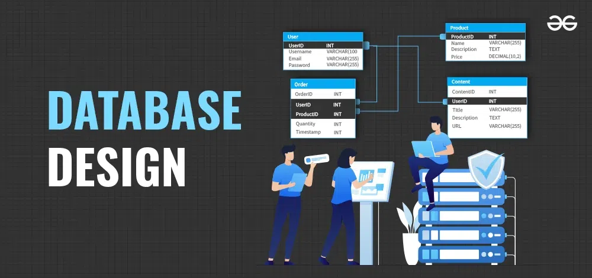

ETL Pipeline for Your Data
I will build a small, reliable ETL pipeline that takes your raw data, cleans it, transforms it, and loads it into a structured database or data warehouse.
Data Engineering
Data Cleaning & Preparation
I will clean and prepare your datasets for analysis: handle missing values, remove duplicates, standardize formats, and create analysis-ready tables.
Data Preparation
AWS Infrastructure Setup (S3, EC2, RDS)
I will help you set up basic AWS infrastructure for a small project, including storage (S3), compute (EC2), and database (RDS), with sensible IAM permissions.
Cloud / AWS.webp)
Web Scraping for E‑commerce Products
I will build a targeted scraper to collect product data (price, rating, title, etc.) from supported e‑commerce sites for analysis or price comparison.
Automation Database Design & Optimization
I will design or review your relational database schema and help optimize queries for better performance and easier reporting.
Databases